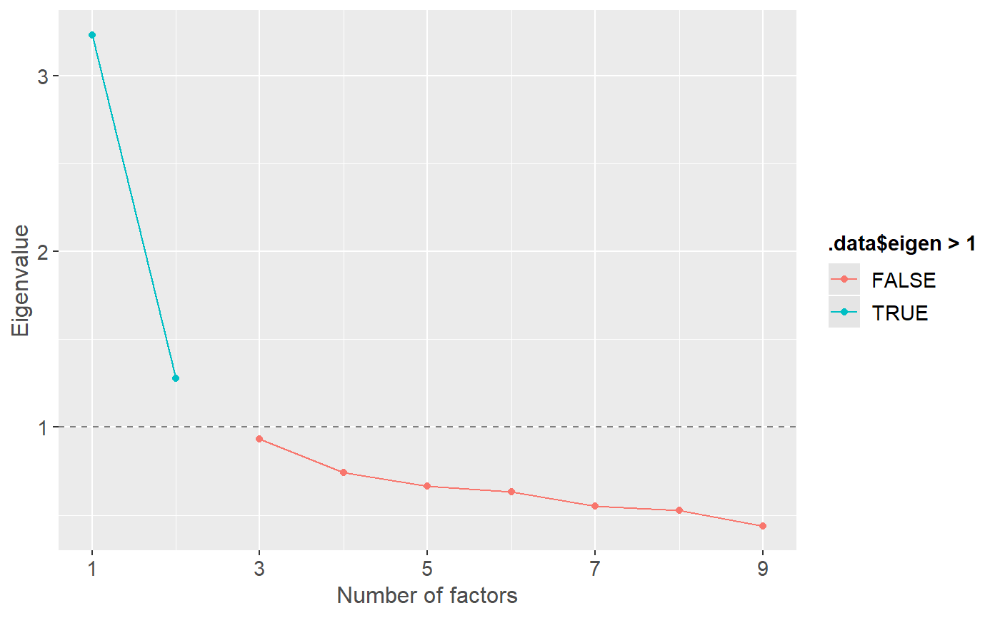
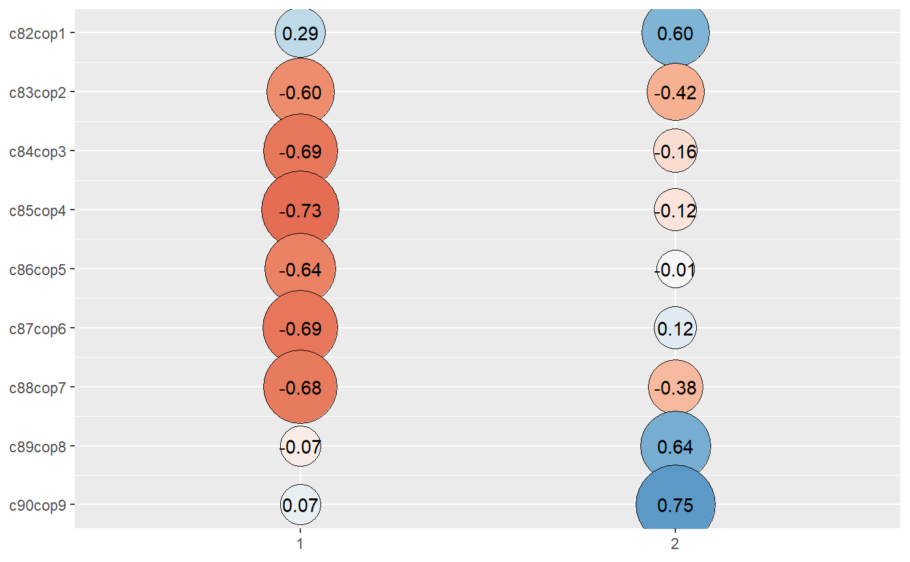
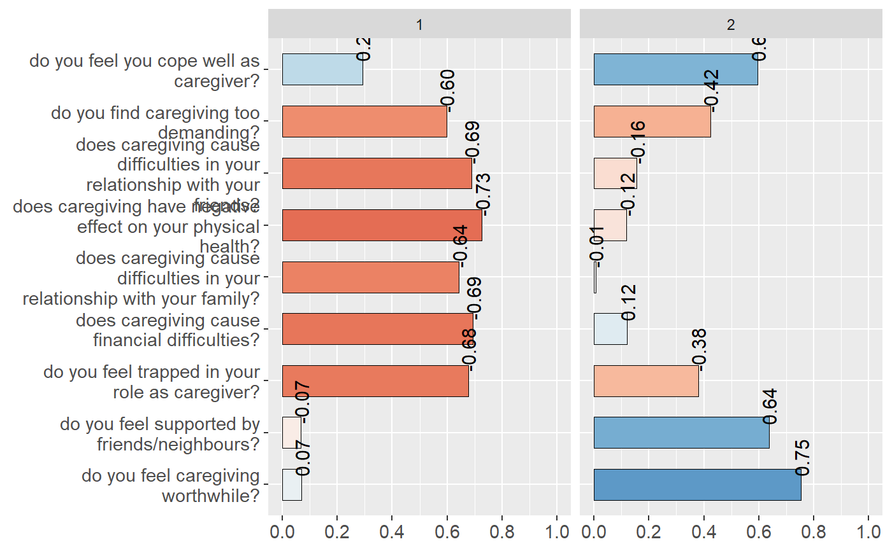
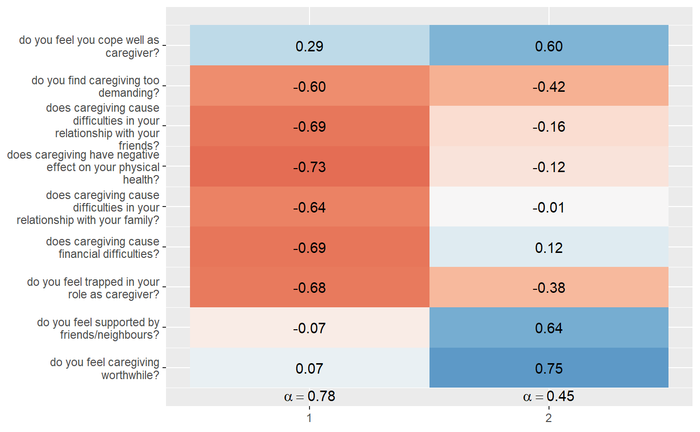

sjp.pca.RdPerforms a principle component analysis on a data frame or matrix (with
varimax or oblimin rotation) and plots the factor solution as ellipses or tiles.
In case a data frame is used as argument, the cronbach's alpha value for
each factor scale will be calculated, i.e. all variables with the highest
loading for a factor are taken for the reliability test. The result is
an alpha value for each factor dimension.
sjp.pca(data, rotation = c("varimax", "oblimin"), nmbr.fctr = NULL, fctr.load.tlrn = 0.1, plot.eigen = FALSE, digits = 2, title = NULL, axis.labels = NULL, type = c("bar", "circle", "tile"), geom.size = 0.6, geom.colors = "RdBu", wrap.title = 50, wrap.labels = 30, show.values = TRUE, show.cronb = TRUE)
| data | A data frame that should be used to compute a PCA, or a |
|---|---|
| rotation | Rotation of the factor loadings. May be |
| nmbr.fctr | Number of factors used for calculating the rotation. By
default, this value is |
| fctr.load.tlrn | Specifies the minimum difference a variable needs to have between factor loadings (components) in order to indicate a clear loading on just one factor and not diffusing over all factors. For instance, a variable with 0.8, 0.82 and 0.84 factor loading on 3 possible factors can not be clearly assigned to just one factor and thus would be removed from the principal component analysis. By default, the minimum difference of loading values between the highest and 2nd highest factor should be 0.1 |
| plot.eigen | If |
| digits | Amount of decimals for estimates |
| title | character vector, used as plot title. Depending on plot type and function,
will be set automatically. If |
| axis.labels | character vector with labels used as axis labels. Optional argument, since in most cases, axis labels are set automatically. |
| type | Plot type resp. geom type. May be one of following: |
| geom.size | size resp. width of the geoms (bar width, line thickness or point size, depending on plot type and function). Note that bar and bin widths mostly need smaller values than dot sizes. |
| geom.colors | user defined color for geoms. See 'Details' in |
| wrap.title | numeric, determines how many chars of the plot title are displayed in one line and when a line break is inserted. |
| wrap.labels | numeric, determines how many chars of the value, variable or axis labels are displayed in one line and when a line break is inserted. |
| show.values | Logical, whether values should be plotted or not. |
| show.cronb | Logical, if |
(Invisibly) returns a structure with
the rotated factor loading matrix (varim)
the column indices of removed variables (for more details see next list item) (removed.colindex)
an updated data frame containing all factors that have a clear loading on a specific scale in case data was a data frame (See argument fctr.load.tlrn for more details) (removed.df)
the factor.index, i.e. the column index of each variable with the highest factor loading for each factor,
the ggplot-object (plot),
the data frame that was used for setting up the ggplot-object (df).
library(sjmisc) data(efc) # recveive first item of COPE-index scale start <- which(colnames(efc) == "c82cop1") # recveive last item of COPE-index scale end <- which(colnames(efc) == "c90cop9") # manually compute PCA pca <- prcomp( na.omit(efc[, start:end]), retx = TRUE, center = TRUE, scale. = TRUE ) # plot results from PCA as circles, including Eigenvalue-diagnostic. # note that this plot does not compute the Cronbach's Alpha sjp.pca(pca, plot.eigen = TRUE, type = "circle", geom.size = 10)#>#> Importance of components: #> PC1 PC2 PC3 PC4 PC5 PC6 PC7 #> Standard deviation 1.798 1.1311 0.9665 0.86090 0.8156 0.79511 0.74264 #> Proportion of Variance 0.359 0.1421 0.1038 0.08235 0.0739 0.07024 0.06128 #> Cumulative Proportion 0.359 0.5012 0.6050 0.68735 0.7612 0.83149 0.89277 #> PC8 PC9 #> Standard deviation 0.72514 0.6627 #> Proportion of Variance 0.05842 0.0488 #> Cumulative Proportion 0.95120 1.0000#>#> [1] 3.2314271 1.2793112 0.9342115 0.7411566 0.6651403 0.6321939 0.5515205 #> [8] 0.5258241 0.4392147#>#># use data frame as argument, let sjp.pca() compute PCA sjp.pca(efc[, start:end])#>#>sjp.pca(efc[, start:end], type = "tile")#>#>